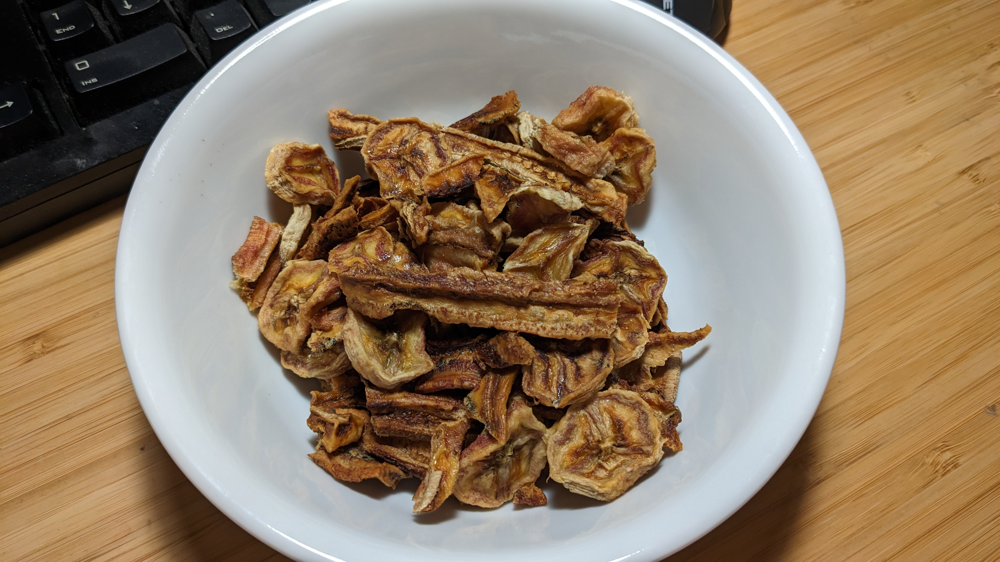

Back to: Projects page || Main page
Banana chips

Overview
Like with many other things, it only occurred to me recently to try making banana chips at home.
Banana chips have several attractive characteristics as a DIY project:
- Easy to make
- Few variables, so iteration to convergence is straightforward
- Huge differential in outcome quality compared to commercial options
- Turns household waste (brown bananas) into a desirable product
Grandma Chambers used to make incredible banana chips in her dehydrator.
It was made of dark gray plastic, and didn't require any electrical components: she would just leave it out in the AZ summer sun for a few hours.
I have literally never had palatable commercial banana chips, so I always suspected that the commercial process was completely different from this "grandma-style" procedure.
Notes to self
Here are my notes to self so far:
- 200 degree oven for about 3 hours, depending on thickness
- 1/4" is a good starting median thickness. Thinner chips dry faster, but riper bananas may be impossible to slice thinly.
- Sugar caramelizes at about 338 F and burns at around 350 F, so burning isn't a concern. However, chips will wind up with a slightly "charred" flavor if left in the oven too long.
- Browner is better, since increased ripeness increases fruit sugar content, as long as the banana is still structural enough to cut
- 4 bananas/wire rack in rounds, 3 bananas/wire rack in a mix of strips and rounds
- It *is* possible to over-dry them. Optimal grandma-style chewy texture requires some moisture to be retained
- Turning the slices over halfway through the bake helps prevent sticking
- Chips will stiffen as they cool, so take them out while they still feel a bit too moist.
- Longitudinal planks will dry faster than rounds, even if they start with the same thickness.
Photos
This banana is acceptably brown, and still has a ways to go before becoming unusable

Chips about 1/4 of the way done